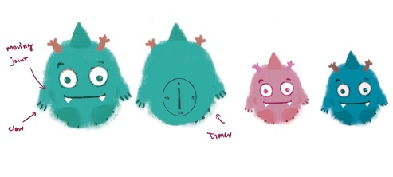

Conceptual Design
Motivation
IStress among college students is a widespread issue. Our researchers, who are also college students, often find themselves working towards deadlines for hours on end without breaks, resulting in extreme levels of stress. In the long term, this mental stress can have profound effects on mental health, leading to conditions such as anxiety, depression, and other serious issues. Meanwhile, we have observed a rising cultural trend, particularly with brands like Jellycat, where many college students have turned to collecting comforting toys for personal comfort and stress relief. This observation has led us to explore the relationship between personal toys and stress relief.
Our research aims to leverage these toys as tangible user interfaces (TUIs), offering a new way to interact with college students. Unlike digital self-care applications that often interrupt students' work and can be found annoying and ineffective, the TUI utilizes the physical and tactile qualities of these toys to attract students' attention and conduct effective interventions in an engaging way. It serves as a comforting tool to interact with students, encouraging them to practice self-care methods that help relieve stress and anxiety.
Design Sketch
Inspired by the Japanese anime character Susuwatari and the nostalgic allure of a childhood companion, the Ugly Doll, we've created our plush toy Bob. Bob features four claws that allow it to securely grip the edges of a laptop. Its limbs boast flexible joints, enabling the plush to move on the laptop surface. The back part of the plush incorporates a timer mechanism. During study sessions, the plush toy's face remains concealed behind the laptop screen. Once the timer set by the student elapses, the plush animates, moving its body to reveal its face, signaling it's time for a study break. The student can then reset the plush, tucking its face away, by simply setting the timer for their next focused study period. When a student pats the plush, it will respond with a gentle vibration, providing tactile feedback. For an added layer of stress relief, if a student rests their hand on the plush for five seconds, it will begin to rhythmically expand and contract, mirroring the cadence of a breathing exercise to aid in practicing stress-reducing breathing techniques.
Finalized Features
After careful consideration of practicality and implementation, we've decided to pursue the following functionality for Bob. Designed to support focused study sessions, Bob allows users to activate a 30-minute study cycle with a simple switch. After the cycle, Bob's LED eyes gradually change color from red to yellow to blue, gently signaling that it's time to take a break. Users can remove Bob from their laptop and pat it; Bob will respond by vibrating, providing tactile feedback to help alleviate stress.

We use gentle LED colors in Bob to gradually transition from one color to another, providing a calming effect without alarming the user. This subtle change does not disturb students focused on their studies, enhancing the user experience by ensuring the transition is soothing and non-disruptive.
We aim for the interaction with Bob to be tangible, allowing users to physically feel Bob's response to their actions, which provides comfort. To achieve this, we plan to embed a vibrating motor within Bob’s body. When users place their hands on top of Bob, it will respond by vibrating, offering a soothing tactile feedback.
Low-Fidelity Prototypes
Technical Implementation